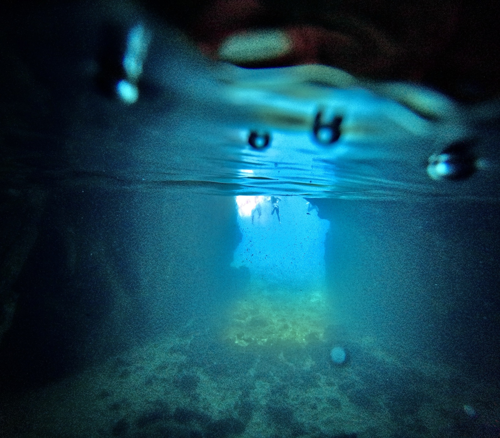
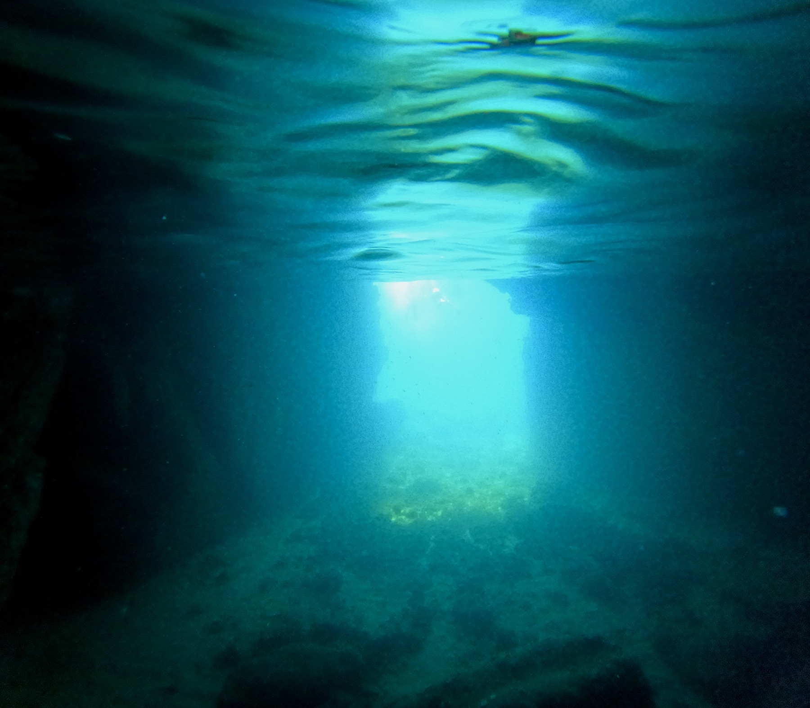
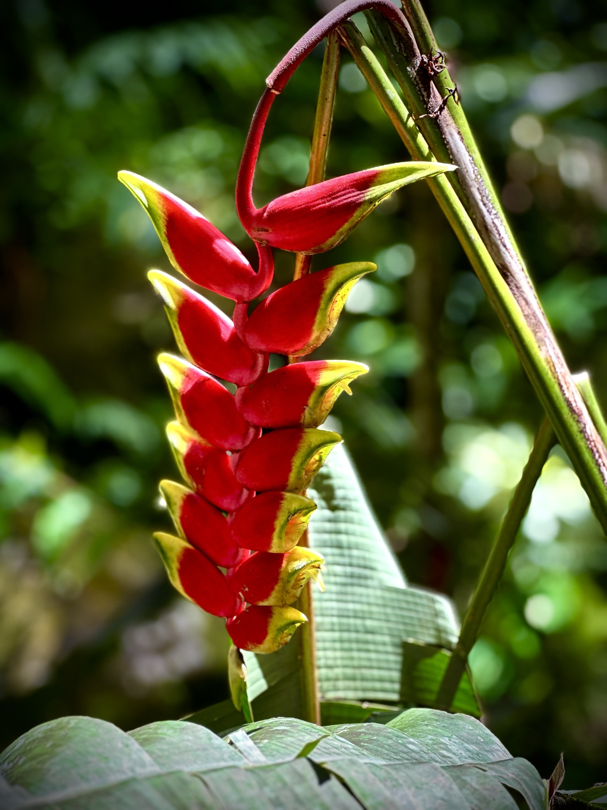
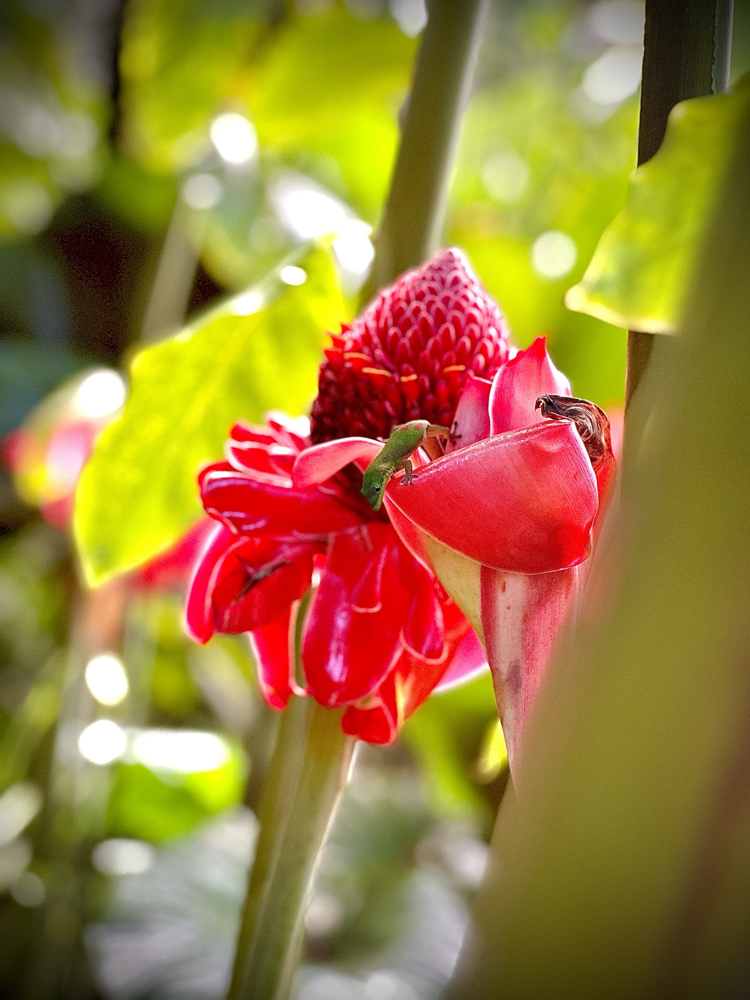
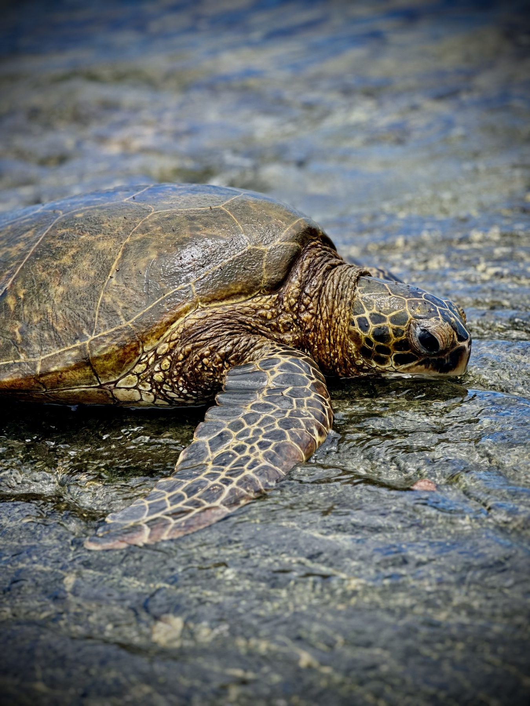
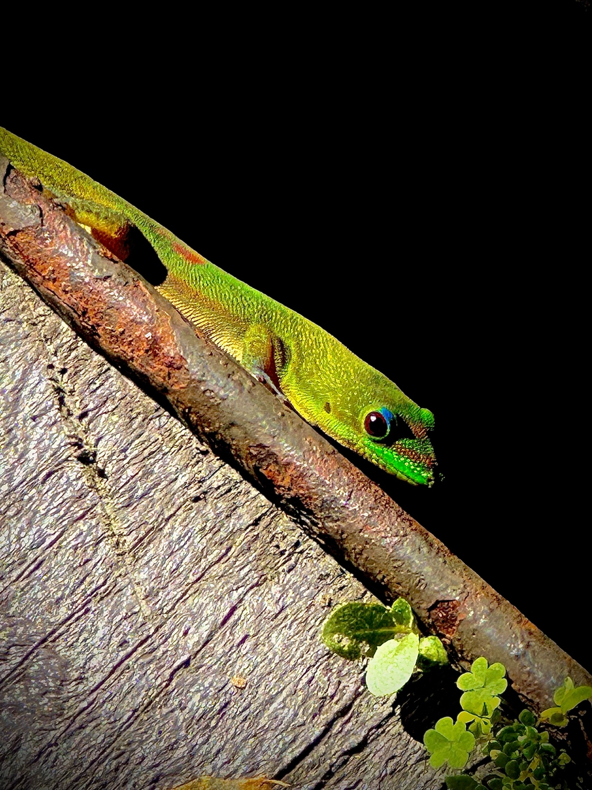

Skip to content
Jasper Lee
About
Left Brain
Right Brain
Contact
My Photo Gallery

La Grotte Bleu, Marseille, France

La Grotte Bleu, Marseille, France
La Grotte Bleu, Marseille, France

Hanging Lobster Claw (Heliconia Rostrata), Hawaii, USA

Red Ginger Lily (Etlingera Elatior) with Gold Dust Day Gecko, Hawaii, USA

Green Sea Turtle, Hawaii, USA

Gold Dust Day Gecko, Hawaii, USA